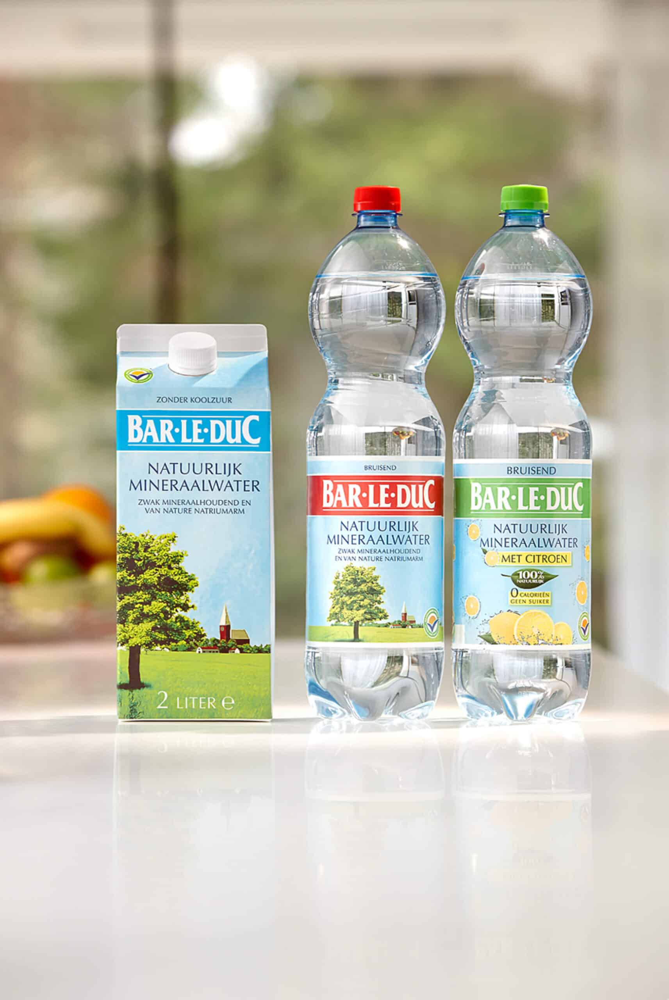
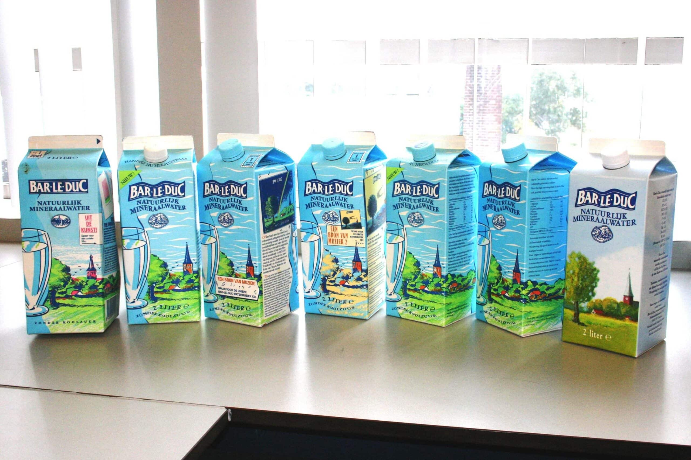
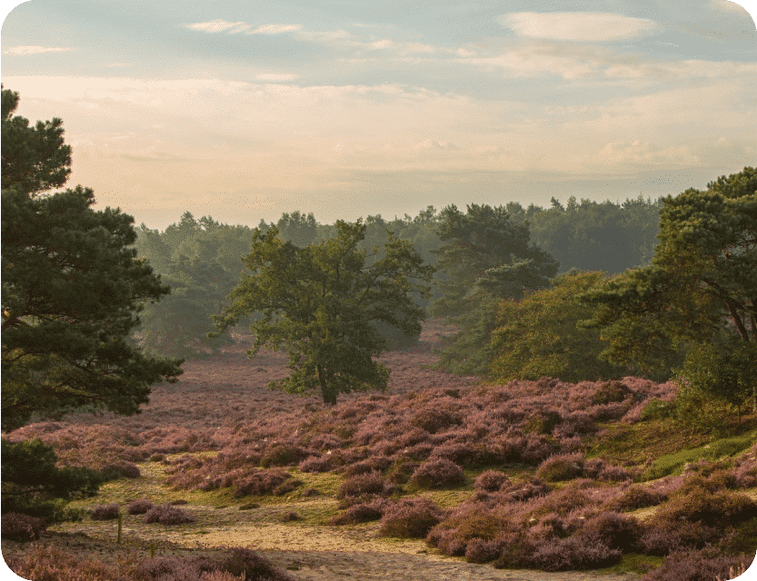
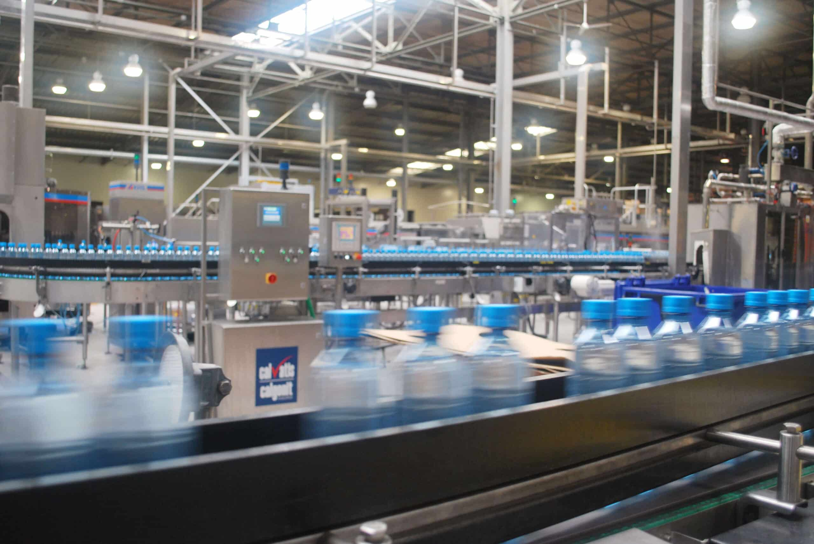
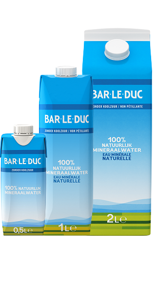

2L
wij helpen je graag 2L water per dag te drinken
Wij halen ons mineraalwater al vele jaren uit een bron op de Utrechtse Heuvelrug, maar wist je dat wij zijn ontstaan in Baarle Nassau? Ons mineraalwater is 100% natuurlijk en van constante kwaliteit door onze bron op 140 meter onder de grond, maar wist jij welke weg ons mineraalwater aflegt? Even scrollen en je kan er alles over lezen.
De wet omschrijft natuurlijk mineraalwater als water dat gezond is en vrij van bacteriën, of dat nu uit oppervlaktewater of uit een ondergrondse laag is. Dit water moet uit een bron komen, natuurlijk of aangeboord, en moet verder twee kenmerken hebben: - Een natuurlijke samenstelling, met mineralen en andere bestanddelen die bij deze soort water van nature voorkomen, - Een natuurlijke zuiverheid. Om deze twee kenmerken te garanderen mag het water enkel gefilterd worden en moet het direct aan de bron gebotteld worden. Voor de productie van natuurlijk mineraalwater zijn 2 vergunningen vereist: De eerste is een vergunning om water uit de bodem te halen, een zogeheten wateronttrekkingsvergunning. Deze krijgt de fabrikant pas van de provincie na uitgebreid geologisch onderzoek. Er moet natuurlijk uitgezocht worden waar en hoeveel water er per jaar gewonnen kan worden zonder schade voor de omgeving. De tweede is dat de waterbron erkend moet worden als bron van natuurlijk mineraalwater. Hiervoor heeft de overheid (NVWA) strenge regels: er zijn meer dan 100 criteria waar het water aan moet voldoen. Ook na de erkenning zijn er regelmatige kwaliteitscontroles. Wat er precies gecontroleerd wordt vind je terug in het Warenwetbesluit Verpakte Waters.
wij helpen je graag 2L water per dag te drinken
Opgericht in 1966
100% natuurlijk en 100% circulaire pet-flessen
Het aantal volgers op onze Instagram
..IS HELEMAAL NIET ZO VER: WIJ BOTTELEN ONS 100% NATUURLIJKE MINERAALWATER RECHTSSTREEKS AAN DE BRON AF. VOORDAT HET WATER IN DE BRON KOMT LEGT HET EEN LANGE ZUIVERENDE WEG AF
Duizenden jaren geleden begon ons water als een frisse regenbui ergens boven de Utrechtse heuvelrug.
Deze regendruppels zijn langzaam door de bodem naar beneden gesijpeld.
De kleilagen vormden een natuurlijk filter en zuiveren het water.
Deze reis door de grond zorgt voor allerlei gezonde mineralen in het water.
In de bron op 140 meter diepte verzamelt het mineraalwater zich en blijft het liggen op een hardere laag.
In onze fabriek bottelen wij het mineraalwater direct vanuit de bron.
Ons verfrissende water belandt bij jou! Zacht en zuiver, steeds van dezelfde kwaliteit. En dat proef je.
Ontdek waar Bar-le-Duc vandaan komt, hoe we aan onze naam komen en nog veel meer.
Bar-le-Duc natuurlijk mineraalwater werd oorspronkelijk gewonnen uit de Baarleduc bronnen in Baarle-Nassau. Daar stond ook de fabriek waar het water werd gebotteld. De naam Bar-le-Duc ontstond in die tijd ook: het is een verbastering van de naam van het naastgelegen plaatsje Baarle Hertog.
Jarenlang werd het natuurlijke mineraalwater van Bar-le-Duc gebotteld in glazen flessen van 1 liter. Dezelfde flessen werden gebruikt voor zowel plat en bruisend mineraalwater.
1986 - Ontstaan van het iconische 2L pak In dit jaar werd de eerste lijn aangeschaft om kartonnen verpakkingen te maken. Voor het eerst werd Bar-le-Duc in pakken van 2 liter afgevuld. Deze leken toen nog op een typische melkverpakking, dus zonder plastic dop. De plastic doppen werden pas later aan de verpakking toegevoegd.
In de loop van de jaren ’90 verliep de vergunning in Baarle-Nassau en moesten we op zoek naar een alternatief. Deze werd gevonden in de mineraalwaterbron van het zusterbedrijf in Utrecht. Dit bedrijf beschikte al sinds 1986 over een vergunning voor erkende mineraalwaterbronnen, die toen nog ‘Catharijne’ heetten. In 1999 hebben wij deze bronnen laten omdopen tot ‘Bar-le-Duc’, sindsdien wordt het Bar-le-Duc water op deze plek gewonnen en gebotteld.
Als merk willen wij onze impact op het milieu beperken. Daarom begonnen we als eerste merk onze flessen te maken van 100% gerecycled materiaal. In 2016 lagen deze voor het eerst in de supermarkten, sinds dat jaar zijn al onze flessen volledig circulair.
Een fabriek vraagt veel energie. In 2018 besloten we om onze energie zoveel mogelijk zelf op te wekken, door ons dak volledig te bedekken met zonnepanelen. Op die manier wekken we tot 60% van de nodige energie op.
Het iconische 2 liter pak werd geboren in 1986 en in 2019 kwam er een lijn bij voor het maken van onze pakken van 1 liter en 0,5 liter.
Op het etiket van elke verpakking Bar-le-Ducmineraalwater koolzuurvrij en koolzuurhoudend is aangegeven wat de mineralenstelling is. Deze is constant en wordt regelmatig gecontroleerd, zoals de warenwet ons verplicht. Op het etiket staan de volgende mineralen genoemd
MEER OVER DE SAMENSTELLINGWij hebben antwoorden.
Bar-le-Duc is zuiver mineraalwater, ontstaan uit de regen die circa 1200 jaar geleden op de Utrechtse heuvelrug is neergevallen. In deze tijd was er nog geen sprake van luchtvervuiling. Het water, dat nu op circa 150m diepte door vele kleilagen beschermd ligt, wordt rechtstreeks vanuit de bron gebotteld. Mineraalwater zoals dat ontspringt bij de bron mag verder maar een beperkt aantal handelingen ondergaan voordat het als natuurlijk mineraalwater in de handel mag worden gebracht. In grote lijnen komt het erop neer dat niets aan het water mag worden toegevoegd (behalve koolzuurgas) en dat uitsluitend door beluchten en filtreren stoffen als ijzer en mangaan mogen worden verwijderd. Deze stoffen geven een ongewenste smaak en kleur aan het water. Dit passen wij ook toe bij het Bar-le-Duc water: eerst wordt het water belucht met steriele lucht. Mangaan en ijzer uit het water worden daardoor omgezet in mangaanoxide en ijzeroxide. Deze stoffen worden vervolgens afgescheiden door het water te filtreren. Na deze behandeling is het water gereed om afgevuld te worden.
Bar-le-Duc is zuiver mineraalwater, ontstaan uit de regen die circa 1200 jaar geleden op de Utrechtse heuvelrug is neergevallen. Het water is langzaam in de bodem gezakt tot een diepte van circa 150m waar het wordt beschermd door een dikke kleilaag. Onderweg hebben de vele aardlagen het water gezuiverd en heeft het water de mineralen opgenomen. Dit water wordt hierna rechtstreeks vanuit de bron gebotteld. Het meest kenmerkende verschil tussen leidingwater en mineraalwater is de constante samenstelling van het mineraalwater. Terwijl leidingwater steeds van samenstelling kan wisselen door het afwisselend gebruik van oppervlakte water en bronwater. Leidingwater mag zijn onderworpen aan allerlei bewerkingen, zoals behandelen met chloor of ozon, filteren met koolstof enz. Dit mag bij mineraalwater niet! Natuurlijk mineraalwater bevat geen enkele toevoeging en heeft geen enkele bewerking ondergaan, zoals filteren, chloriseren, ozoniseren. Het water uit de Bar-le-Duc bronnen is honderden jaren geleden als regen gevallen en heeft op zijn weg naar de bron derhalve het een en ander aan mineralen opgenomen. Het mineraalwater wordt voortdurend gecontroleerd op zijn originele samenstelling, zoals die was bij het erkennen van de bron.
In natuurlijk mineraalwater, zoals Bar-le-Duc, zitten van nature diverse mineralen. De afkortingen die op de verpakking staan vermeld, staan voor deze mineralen, uitgedrukt in miligram per L water. Ca: Calcium Mg: Magnesium Na: Natrium K: Kalium F: Fluor Cl: Chloride SO4: Sulfaat HCO3: Waterstofcarbonaat NO3: Nitraat
Bar-le-Duc water is van nature natriumarm, waardoor het inderdaad zeer geschikt is voor de aanmaak van babyvoeding.
Bij Bar-le-Duc zijn we druk bezig met duurzaamheid. Zo zijn onze PET flessen al sinds 2015 gemaakt van 100% gerecycled materiaal. Ook proberen wij onze fabriek zo duurzaam mogelijk in te richten. Zo ligt ons hele dak ligt vol zonnenpanelen, en bevindt de bron zich recht boven de fabriek. Dit zorgt ervoor dat ons hele productie process een stuk efficienter is. Ook blijven wij werken aan onze samenwerking met stichting landschap erfgoed voor het behoudt van het landschap. Zo proberen wij met Bar-le-Duc ons steentje bij te dragen op gebied van duurzaamheid.
Wij helpen je graag. Stel je vraag via ons contactformulier.
NEEM CONTACT OP